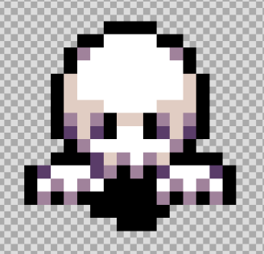
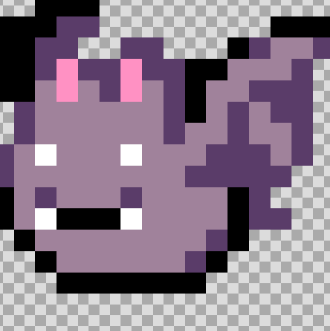
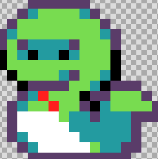
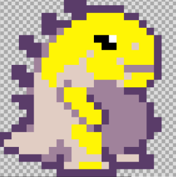
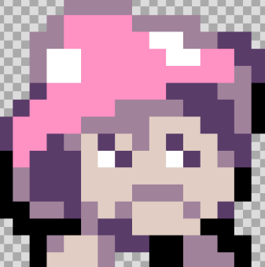

| Pertsonaia nagusia, printzesa. Hau da jolasteko erabiliko den pertsonaia, player motakoa. Honek projektilak botako ditu eta janari motako objektuak hartuko ditu. |

|
| Mamuak enemy motako etsaiak dira. Hauek printzesa jarraituko dute eta printzesa ikutzen dutenean printzesa hilko da. Berriz, pritzesak botatako projektil bat ikutzen dituenean hauek deasgertuko dira, eta markadorean 2 puntu gehituko dira. Lehenengo mapan bakarrik agertuko dira, eta edozein lekuetan agertu daitezke. |
 |
| Saguzarrak enemy motako pertsonaiak dira. Hauek bigarren maparen lehenengo zatian agertzen dira, partida bakoitzean toki ezberdinetan agertzen dira. Hauek printzesa ikutzen badute printzesa hiltzen dute, eta printzesaren projektila saguzarrak ikutzen baditu hauek desagertuko dira. 10 saguzar egongo dira, eta bakoitzak 2 puntu gehituko ditu markadorean. |
 |
| Sugeak enemy motako pertsonaiak dira. Hauek, saguzarrak bezela, bigarren mapan agertuko dira, baina bakarrik 2. zatian. Printzesa jarraituko dute eta ikutzen dutenean printzesa hilko da. Aldiz, printzesaren proiektila ikutzen baditu sugeak izango dira hilko direnak. Suge bakoitza hil ondoren 2 puntu gehituko dira markadorera. Guztira 5 suge agertuko dira. |
 |
| Dinosaurioa dinosaurio motako etsaia da. Etsai honek bakarrik izango du bizitza barra. Bigarren maparen bigarren zatian agertuko da. Printzesak etsai hau ikutzen badu hil egingo da, eta printzesaren projektil bat baino gehiago jo behar du bizitza barra agortu arte. Bizitza barra amaitzen denean dinosaurioa desagertuko da. Bakarra egongo da, eta honekin amaitzerakoan 100 puntu gehituko dira markadorean. Dinosaurioak printzesa jarrituko du. |
 |
| Perretxikoak enemy motako etsaiak dira. Hauek ez dira mugituko, beraz, ez dute printzesa jarraitzen. Printzesa gainean jartzen bada bizitza bat kenduko zaio, eta printzesaren projektila perretxikoa jotzen badu perretxikoa desagetuko da. Guztira 5 egongo dira eta maparen hirugarren zatian agertuko dira. Bakoitzak 2 puntu gehituko ditu markadorean. |
 |